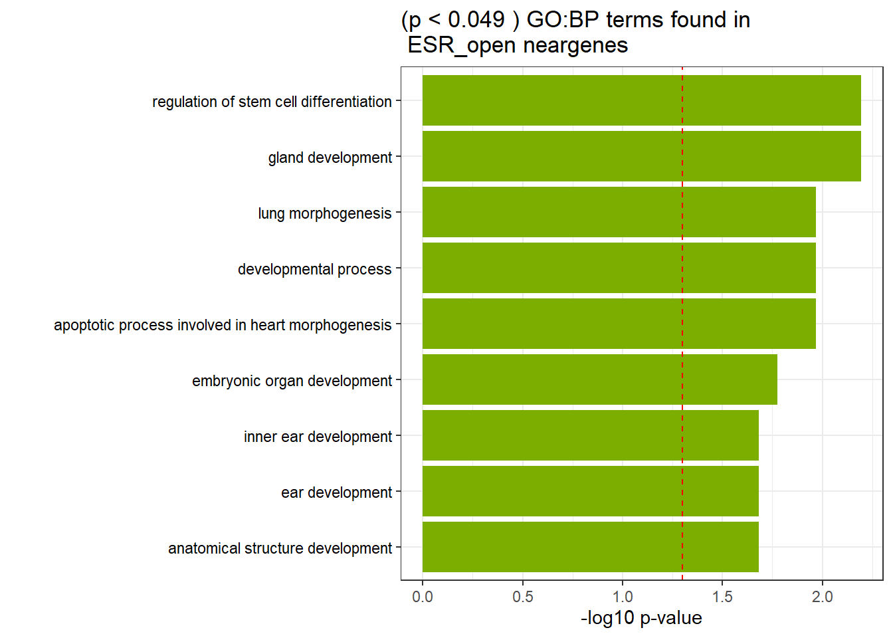
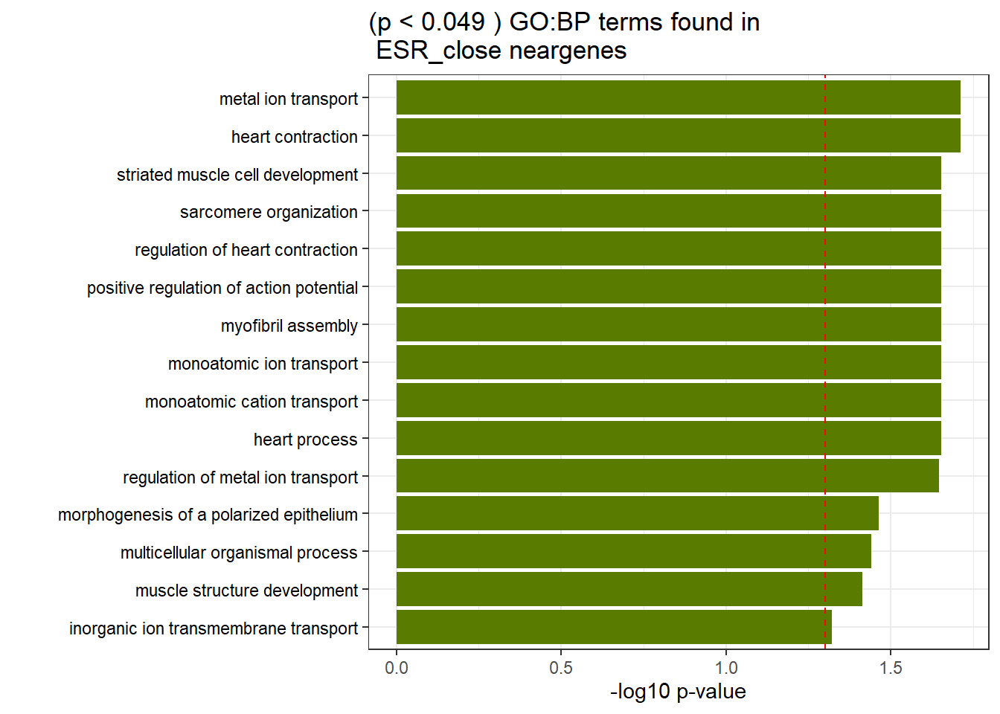
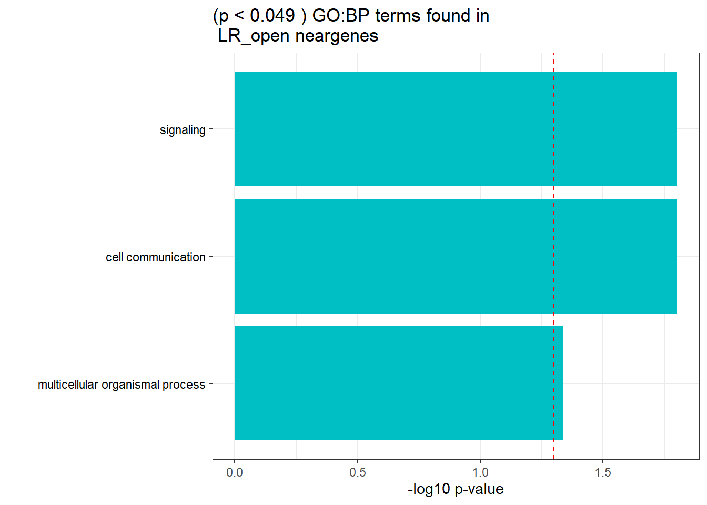

GO and KEGG pathway analysis
ERM
2024-10-07
Last updated: 2024-10-07
Checks: 7 0
Knit directory: ATAC_learning/
This reproducible R Markdown analysis was created with workflowr (version 1.7.1). The Checks tab describes the reproducibility checks that were applied when the results were created. The Past versions tab lists the development history.
Great! Since the R Markdown file has been committed to the Git repository, you know the exact version of the code that produced these results.
Great job! The global environment was empty. Objects defined in the global environment can affect the analysis in your R Markdown file in unknown ways. For reproduciblity it’s best to always run the code in an empty environment.
The command set.seed(20231016) was run prior to running
the code in the R Markdown file. Setting a seed ensures that any results
that rely on randomness, e.g. subsampling or permutations, are
reproducible.
Great job! Recording the operating system, R version, and package versions is critical for reproducibility.
Nice! There were no cached chunks for this analysis, so you can be confident that you successfully produced the results during this run.
Great job! Using relative paths to the files within your workflowr project makes it easier to run your code on other machines.
Great! You are using Git for version control. Tracking code development and connecting the code version to the results is critical for reproducibility.
The results in this page were generated with repository version 2f0dc7b. See the Past versions tab to see a history of the changes made to the R Markdown and HTML files.
Note that you need to be careful to ensure that all relevant files for
the analysis have been committed to Git prior to generating the results
(you can use wflow_publish or
wflow_git_commit). workflowr only checks the R Markdown
file, but you know if there are other scripts or data files that it
depends on. Below is the status of the Git repository when the results
were generated:
Ignored files:
Ignored: .RData
Ignored: .Rhistory
Ignored: .Rproj.user/
Ignored: data/ACresp_SNP_table.csv
Ignored: data/ARR_SNP_table.csv
Ignored: data/All_merged_peaks.tsv
Ignored: data/CAD_gwas_dataframe.RDS
Ignored: data/CTX_SNP_table.csv
Ignored: data/Collapsed_expressed_NG_peak_table.csv
Ignored: data/DEG_toplist_sep_n45.RDS
Ignored: data/FRiP_first_run.txt
Ignored: data/Final_four_data/
Ignored: data/Frip_1_reads.csv
Ignored: data/Frip_2_reads.csv
Ignored: data/Frip_3_reads.csv
Ignored: data/Frip_4_reads.csv
Ignored: data/Frip_5_reads.csv
Ignored: data/Frip_6_reads.csv
Ignored: data/GO_KEGG_analysis/
Ignored: data/HF_SNP_table.csv
Ignored: data/Ind1_75DA24h_dedup_peaks.csv
Ignored: data/Ind1_TSS_peaks.RDS
Ignored: data/Ind1_firstfragment_files.txt
Ignored: data/Ind1_fragment_files.txt
Ignored: data/Ind1_peaks_list.RDS
Ignored: data/Ind1_summary.txt
Ignored: data/Ind2_TSS_peaks.RDS
Ignored: data/Ind2_fragment_files.txt
Ignored: data/Ind2_peaks_list.RDS
Ignored: data/Ind2_summary.txt
Ignored: data/Ind3_TSS_peaks.RDS
Ignored: data/Ind3_fragment_files.txt
Ignored: data/Ind3_peaks_list.RDS
Ignored: data/Ind3_summary.txt
Ignored: data/Ind4_79B24h_dedup_peaks.csv
Ignored: data/Ind4_TSS_peaks.RDS
Ignored: data/Ind4_V24h_fraglength.txt
Ignored: data/Ind4_fragment_files.txt
Ignored: data/Ind4_fragment_filesN.txt
Ignored: data/Ind4_peaks_list.RDS
Ignored: data/Ind4_summary.txt
Ignored: data/Ind5_TSS_peaks.RDS
Ignored: data/Ind5_fragment_files.txt
Ignored: data/Ind5_fragment_filesN.txt
Ignored: data/Ind5_peaks_list.RDS
Ignored: data/Ind5_summary.txt
Ignored: data/Ind6_TSS_peaks.RDS
Ignored: data/Ind6_fragment_files.txt
Ignored: data/Ind6_peaks_list.RDS
Ignored: data/Ind6_summary.txt
Ignored: data/Knowles_4.RDS
Ignored: data/Knowles_5.RDS
Ignored: data/Knowles_6.RDS
Ignored: data/LiSiLTDNRe_TE_df.RDS
Ignored: data/MI_gwas.RDS
Ignored: data/SNP_GWAS_PEAK_MRC_id
Ignored: data/SNP_GWAS_PEAK_MRC_id.csv
Ignored: data/SNP_gene_cat_list.tsv
Ignored: data/SNP_supp_schneider.RDS
Ignored: data/TE_info/
Ignored: data/TFmapnames.RDS
Ignored: data/all_TSSE_scores.RDS
Ignored: data/all_four_filtered_counts.txt
Ignored: data/aln_run1_results.txt
Ignored: data/anno_ind1_DA24h.RDS
Ignored: data/anno_ind4_V24h.RDS
Ignored: data/annotated_gwas_SNPS.csv
Ignored: data/background_n45_he_peaks.RDS
Ignored: data/cardiac_muscle_FRIP.csv
Ignored: data/cardiomyocyte_FRIP.csv
Ignored: data/col_ng_peak.csv
Ignored: data/cormotif_full_4_run.RDS
Ignored: data/cormotif_full_4_run_he.RDS
Ignored: data/cormotif_full_6_run.RDS
Ignored: data/cormotif_full_6_run_he.RDS
Ignored: data/cormotif_probability_45_list.csv
Ignored: data/cormotif_probability_45_list_he.csv
Ignored: data/cormotif_probability_all_6_list.csv
Ignored: data/cormotif_probability_all_6_list_he.csv
Ignored: data/embryo_heart_FRIP.csv
Ignored: data/enhancer_list_ENCFF126UHK.bed
Ignored: data/enhancerdata/
Ignored: data/filt_Peaks_efit2.RDS
Ignored: data/filt_Peaks_efit2_bl.RDS
Ignored: data/filt_Peaks_efit2_n45.RDS
Ignored: data/first_Peaksummarycounts.csv
Ignored: data/first_run_frag_counts.txt
Ignored: data/full_bedfiles/
Ignored: data/gene_ref.csv
Ignored: data/gwas_1_dataframe.RDS
Ignored: data/gwas_2_dataframe.RDS
Ignored: data/gwas_3_dataframe.RDS
Ignored: data/gwas_4_dataframe.RDS
Ignored: data/gwas_5_dataframe.RDS
Ignored: data/high_conf_peak_counts.csv
Ignored: data/high_conf_peak_counts.txt
Ignored: data/high_conf_peaks_bl_counts.txt
Ignored: data/high_conf_peaks_counts.txt
Ignored: data/hits_files/
Ignored: data/hyper_files/
Ignored: data/hypo_files/
Ignored: data/ind1_DA24hpeaks.RDS
Ignored: data/ind1_TSSE.RDS
Ignored: data/ind2_TSSE.RDS
Ignored: data/ind3_TSSE.RDS
Ignored: data/ind4_TSSE.RDS
Ignored: data/ind4_V24hpeaks.RDS
Ignored: data/ind5_TSSE.RDS
Ignored: data/ind6_TSSE.RDS
Ignored: data/initial_complete_stats_run1.txt
Ignored: data/left_ventricle_FRIP.csv
Ignored: data/median_24_lfc.RDS
Ignored: data/median_3_lfc.RDS
Ignored: data/mergedPeads.gff
Ignored: data/mergedPeaks.gff
Ignored: data/motif_list_full
Ignored: data/motif_list_n45
Ignored: data/motif_list_n45.RDS
Ignored: data/multiqc_fastqc_run1.txt
Ignored: data/multiqc_fastqc_run2.txt
Ignored: data/multiqc_genestat_run1.txt
Ignored: data/multiqc_genestat_run2.txt
Ignored: data/my_hc_filt_counts.RDS
Ignored: data/my_hc_filt_counts_n45.RDS
Ignored: data/n45_bedfiles/
Ignored: data/n45_files
Ignored: data/other_papers/
Ignored: data/output_100_MA0835.2.txt
Ignored: data/output_101_MA0018.4.txt
Ignored: data/output_102_MA1102.2.txt
Ignored: data/output_103_MA0162.4.txt
Ignored: data/output_104_MA0598.3.txt
Ignored: data/output_105_MA0473.3.txt
Ignored: data/output_106_MA0640.2.txt
Ignored: data/output_107_MA0761.2.txt
Ignored: data/output_108_MA0477.2.txt
Ignored: data/output_109_MA0062.3.txt
Ignored: data/output_10_MA0076.2.txt
Ignored: data/output_110_MA0035.4.txt
Ignored: data/output_111_MA0482.2.txt
Ignored: data/output_112_MA1104.2.txt
Ignored: data/output_113_MA0490.2.txt
Ignored: data/output_114_MA0491.2.txt
Ignored: data/output_115_MA1107.2.txt
Ignored: data/output_116_MA0496.3.txt
Ignored: data/output_117_MA0620.3.txt
Ignored: data/output_118_MA0500.2.txt
Ignored: data/output_119_MA0089.2.txt
Ignored: data/output_11_MA0258.2.txt
Ignored: data/output_120_MA0782.2.txt
Ignored: data/output_121_MA0090.3.txt
Ignored: data/output_122_MA0809.2.txt
Ignored: data/output_123_MA0093.3.txt
Ignored: data/output_124_MA0609.2.txt
Ignored: data/output_125_MA1684.1.txt
Ignored: data/output_126_MA1928.1.txt
Ignored: data/output_127_MA1929.1.txt
Ignored: data/output_128_MA1930.1.txt
Ignored: data/output_129_MA1934.1.txt
Ignored: data/output_12_MA0150.2.txt
Ignored: data/output_130_MA1940.1.txt
Ignored: data/output_131_MA1942.1.txt
Ignored: data/output_132_MA1944.1.txt
Ignored: data/output_133_MA1951.1.txt
Ignored: data/output_134_MA1959.1.txt
Ignored: data/output_135_MA1964.1.txt
Ignored: data/output_136_MA1970.1.txt
Ignored: data/output_137_MA1988.1.txt
Ignored: data/output_138_MA1992.1.txt
Ignored: data/output_139_MA1993.1.txt
Ignored: data/output_13_MA0140.2.txt
Ignored: data/output_140_MA1995.1.txt
Ignored: data/output_141_MA1997.1.txt
Ignored: data/output_142_MA2002.1.txt
Ignored: data/output_143_MA0037.4.txt
Ignored: data/output_144_MA0156.3.txt
Ignored: data/output_145_MA0474.3.txt
Ignored: data/output_146_MA0489.2.txt
Ignored: data/output_147_MA0493.2.txt
Ignored: data/output_148_MA0516.3.txt
Ignored: data/output_149_MA0521.2.txt
Ignored: data/output_14_MA0591.1.txt
Ignored: data/output_150_MA0633.2.txt
Ignored: data/output_151_MA0659.3.txt
Ignored: data/output_152_MA0685.2.txt
Ignored: data/output_153_MA0697.2.txt
Ignored: data/output_154_MA0740.2.txt
Ignored: data/output_155_MA0742.2.txt
Ignored: data/output_156_MA0764.3.txt
Ignored: data/output_157_MA0831.3.txt
Ignored: data/output_158_MA1472.2.txt
Ignored: data/output_159_MA1483.2.txt
Ignored: data/output_15_MA0595.1.txt
Ignored: data/output_160_MA1511.2.txt
Ignored: data/output_161_MA1633.2.txt
Ignored: data/output_16_MA0596.1.txt
Ignored: data/output_17_MA0599.1.txt
Ignored: data/output_18_MA0603.1.txt
Ignored: data/output_19_MA0645.1.txt
Ignored: data/output_1_MA0029.1.txt
Ignored: data/output_1_Mecom.txt
Ignored: data/output_20_MA0475.2.txt
Ignored: data/output_21_MA0655.1.txt
Ignored: data/output_22_MA0656.1.txt
Ignored: data/output_23_MA0660.1.txt
Ignored: data/output_24_MA0741.1.txt
Ignored: data/output_25_MA0747.1.txt
Ignored: data/output_26_MA0751.1.txt
Ignored: data/output_27_MA0760.1.txt
Ignored: data/output_28_MA0098.3.txt
Ignored: data/output_29_MA0762.1.txt
Ignored: data/output_2_MA0119.1.txt
Ignored: data/output_30_MA0498.2.txt
Ignored: data/output_31_MA0774.1.txt
Ignored: data/output_32_MA0775.1.txt
Ignored: data/output_33_MA0783.1.txt
Ignored: data/output_34_MA0797.1.txt
Ignored: data/output_35_MA0510.2.txt
Ignored: data/output_36_MA0808.1.txt
Ignored: data/output_37_MA0816.1.txt
Ignored: data/output_38_MA0840.1.txt
Ignored: data/output_39_MA0117.2.txt
Ignored: data/output_3_MA0139.1.txt
Ignored: data/output_40_MA0841.1.txt
Ignored: data/output_41_MA0036.3.txt
Ignored: data/output_42_MA1114.1.txt
Ignored: data/output_43_MA1121.1.txt
Ignored: data/output_44_MA0750.2.txt
Ignored: data/output_45_MA0099.3.txt
Ignored: data/output_46_MA1126.1.txt
Ignored: data/output_47_MA1128.1.txt
Ignored: data/output_48_MA1129.1.txt
Ignored: data/output_49_MA1130.1.txt
Ignored: data/output_4_MA0145.2.txt
Ignored: data/output_50_MA1131.1.txt
Ignored: data/output_51_MA1132.1.txt
Ignored: data/output_52_MA1133.1.txt
Ignored: data/output_53_MA1134.1.txt
Ignored: data/output_54_MA1135.1.txt
Ignored: data/output_55_MA1136.1.txt
Ignored: data/output_56_MA1137.1.txt
Ignored: data/output_57_MA1138.1.txt
Ignored: data/output_58_MA1139.1.txt
Ignored: data/output_59_MA1141.1.txt
Ignored: data/output_5_MA0476.1.txt
Ignored: data/output_60_MA1142.1.txt
Ignored: data/output_61_MA1143.1.txt
Ignored: data/output_62_MA1144.1.txt
Ignored: data/output_63_MA1145.1.txt
Ignored: data/output_64_MA1101.2.txt
Ignored: data/output_65_MA1474.1.txt
Ignored: data/output_66_MA1475.1.txt
Ignored: data/output_67_MA1484.1.txt
Ignored: data/output_68_MA1512.1.txt
Ignored: data/output_69_MA1516.1.txt
Ignored: data/output_6_MA0478.1.txt
Ignored: data/output_70_MA1517.1.txt
Ignored: data/output_71_MA1520.1.txt
Ignored: data/output_72_MA1521.1.txt
Ignored: data/output_73_MA1523.1.txt
Ignored: data/output_74_MA1527.1.txt
Ignored: data/output_75_MA1528.1.txt
Ignored: data/output_76_MA1564.1.txt
Ignored: data/output_77_MA1571.1.txt
Ignored: data/output_78_MA1572.1.txt
Ignored: data/output_79_MA1593.1.txt
Ignored: data/output_7_MA0488.1.txt
Ignored: data/output_80_MA1599.1.txt
Ignored: data/output_81_MA1628.1.txt
Ignored: data/output_82_MA1629.1.txt
Ignored: data/output_83_MA1100.2.txt
Ignored: data/output_84_MA0462.2.txt
Ignored: data/output_85_MA0766.2.txt
Ignored: data/output_86_MA1140.2.txt
Ignored: data/output_87_MA0842.2.txt
Ignored: data/output_88_MA0746.2.txt
Ignored: data/output_89_MA1713.1.txt
Ignored: data/output_8_MA0492.1.txt
Ignored: data/output_90_MA1721.1.txt
Ignored: data/output_91_MA1632.1.txt
Ignored: data/output_92_MA1634.1.txt
Ignored: data/output_93_MA1635.1.txt
Ignored: data/output_94_MA1641.1.txt
Ignored: data/output_95_MA1643.1.txt
Ignored: data/output_96_MA1645.1.txt
Ignored: data/output_97_MA1656.1.txt
Ignored: data/output_98_MA1726.1.txt
Ignored: data/output_99_MA1728.1.txt
Ignored: data/output_9_MA0501.1.txt
Ignored: data/peakAnnoList_1.RDS
Ignored: data/peakAnnoList_2.RDS
Ignored: data/peakAnnoList_24_full.RDS
Ignored: data/peakAnnoList_24_n45.RDS
Ignored: data/peakAnnoList_3.RDS
Ignored: data/peakAnnoList_3_full.RDS
Ignored: data/peakAnnoList_3_n45.RDS
Ignored: data/peakAnnoList_4.RDS
Ignored: data/peakAnnoList_5.RDS
Ignored: data/peakAnnoList_6.RDS
Ignored: data/peakAnnoList_Eight.RDS
Ignored: data/peakAnnoList_full_motif.RDS
Ignored: data/peakAnnoList_n45_motif.RDS
Ignored: data/siglist_full.RDS
Ignored: data/siglist_n45.RDS
Ignored: data/summary_peakIDandReHeat.csv
Ignored: data/test.list.RDS
Ignored: data/testnames.txt
Ignored: data/toplist_6.RDS
Ignored: data/toplist_full.RDS
Ignored: data/toplist_full_DAR_6.RDS
Ignored: data/toplist_n45.RDS
Ignored: data/trimmed_seq_length.csv
Ignored: data/unclassified_full_set_peaks.RDS
Ignored: data/unclassified_n45_set_peaks.RDS
Ignored: data/xstreme/
Ignored: trimmed_Ind1_75DA24h_S7.nodup.splited.bam/
Untracked files:
Untracked: Correlationplot_scaled.pdf
Untracked: DOX_DAR_assess.Rmd
Untracked: EAR_2_plot.pdf
Untracked: ESR_1_plot.pdf
Untracked: Firstcorr plotATAC.pdf
Untracked: IND1_2_3_6_corrplot.pdf
Untracked: LR_3_plot.pdf
Untracked: NR_1_plot.pdf
Untracked: analysis/LFC_corr.Rmd
Untracked: analysis/ReHeat_analysis.Rmd
Untracked: analysis/TE_analysis_old.Rmd
Untracked: analysis/my_hc_filt_counts.csv
Untracked: analysis/nucleosome_explore.Rmd
Untracked: code/IGV_snapshot_code.R
Untracked: code/LongDARlist.R
Untracked: code/MRC_clusterlog2cpm.R
Untracked: code/TSSE.R
Untracked: code/just_for_Fun.R
Untracked: code/toplist_assembly.R
Untracked: lcpm_filtered_corplot.pdf
Untracked: log2cpmfragcount.pdf
Untracked: output/cormotif_probability_45_list.csv
Untracked: output/cormotif_probability_all_6_list.csv
Untracked: output_1_Mecom.txt
Untracked: splited/
Untracked: trimmed_Ind1_75DA24h_S7.nodup.fragment.size.distribution.pdf
Untracked: trimmed_Ind1_75DA3h_S1.nodup.fragment.size.distribution.pdf
Unstaged changes:
Modified: analysis/CorMotif_data_n45.Rmd
Modified: analysis/Enhancer_files_ff.Rmd
Modified: analysis/Enrichment_motif.Rmd
Modified: analysis/Jaspar_motif_ff.Rmd
Modified: analysis/Peak_calling.Rmd
Modified: analysis/Raodah.Rmd
Modified: analysis/Smaller_set_DAR.Rmd
Modified: analysis/TE_analysis.Rmd
Modified: analysis/final_four_analysis.Rmd
Note that any generated files, e.g. HTML, png, CSS, etc., are not included in this status report because it is ok for generated content to have uncommitted changes.
These are the previous versions of the repository in which changes were
made to the R Markdown (analysis/GO_KEGG_analysis.Rmd) and
HTML (docs/GO_KEGG_analysis.html) files. If you’ve
configured a remote Git repository (see ?wflow_git_remote),
click on the hyperlinks in the table below to view the files as they
were in that past version.
| File | Version | Author | Date | Message |
|---|---|---|---|---|
| Rmd | 2f0dc7b | reneeisnowhere | 2024-10-07 | adding pdf |
| html | 8ea25f4 | reneeisnowhere | 2024-10-07 | Build site. |
| Rmd | 19b7e2b | reneeisnowhere | 2024-10-07 | adding pdf |
| html | fd5c82d | reneeisnowhere | 2024-09-23 | Build site. |
| Rmd | df3bc4e | reneeisnowhere | 2024-09-23 | updated group of eight |
| Rmd | ec629e1 | reneeisnowhere | 2024-08-20 | before adding in 2kb and KEGG filters to data, removing all none-useful |
| Rmd | 128c4f7 | reneeisnowhere | 2024-08-20 | before adding in 2kb and KEGG filters to data, removing all none-useful |
| Rmd | 1d8660b | reneeisnowhere | 2024-08-19 | updates to code |
| Rmd | 55dcc72 | reneeisnowhere | 2024-08-06 | using median lfc update |
| html | 3115a55 | reneeisnowhere | 2024-08-05 | Build site. |
| Rmd | 5193b51 | reneeisnowhere | 2024-08-05 | updates to barcharts |
| html | 1933f92 | reneeisnowhere | 2024-08-02 | Build site. |
| Rmd | 50cc96f | reneeisnowhere | 2024-08-02 | updates using new guidelines |
| Rmd | 5d54017 | reneeisnowhere | 2024-06-12 | adding commit |
| html | bd33175 | reneeisnowhere | 2024-06-07 | Build site. |
| Rmd | b5e8a1e | reneeisnowhere | 2024-06-07 | updates and new analysis |
| html | 021ca5f | reneeisnowhere | 2024-06-07 | Build site. |
| Rmd | 95e0415 | reneeisnowhere | 2024-06-07 | updates, i think |
| html | eea0976 | reneeisnowhere | 2024-06-03 | Build site. |
| Rmd | 0672654 | reneeisnowhere | 2024-06-03 | updates to gene lists |
| html | 897af23 | reneeisnowhere | 2024-05-28 | Build site. |
| Rmd | 5c6ef83 | reneeisnowhere | 2024-05-28 | updates to KEGG/GO 20kb lists |
| html | d1a3829 | reneeisnowhere | 2024-05-17 | Build site. |
| Rmd | 9fb4f9a | reneeisnowhere | 2024-05-17 | adding in updates from Neargenes and enhncers |
| html | 2d991d7 | reneeisnowhere | 2024-05-03 | Build site. |
| Rmd | f57f2ee | reneeisnowhere | 2024-05-03 | first update |
library(tidyverse)
library(kableExtra)
library(broom)
library(RColorBrewer)
library(gprofiler2)
library(ChIPseeker)
library("TxDb.Hsapiens.UCSC.hg38.knownGene")
library("org.Hs.eg.db")
library(rtracklayer)
library(edgeR)
library(ggfortify)
library(limma)
library(readr)
library(BiocGenerics)
library(gridExtra)
library(VennDiagram)
library(scales)
library(ggVennDiagram)
library(BiocParallel)
library(ggpubr)
library(biomaRt)GO_KEGG_analysis <- function(df,type, setp_value=1){
# Extract the name of the dataframe
a <- deparse(substitute(df)) %>%
gsub("_NG_2kresgenes","",.)
# Prepare the table output
df_nomtable <- df$result %>%
dplyr::select(c(source, term_id,
term_name,intersection_size,
term_size, p_value))
# Create a color palette for different dataframe names
# You can customize this color palette as needed
mrc_palette <- c(
"EAR_open" = "#F8766D",
"EAR_close" = "#f6483c",
"ESR_open" = "#7CAE00",
"ESR_close" = "#587b00",
"ESR_OC" = "#6a9500",
"ESR_opcl" = "cornflowerblue",
"ESR_clop"= "grey60",
"LR_open" = "#00BFC4",
"LR_close" = "#008d91",
"NR" = "#C77CFF"
)
# Use the dataframe name as the fill color (fallback to black if name is not in the palette)
fill_color <- mrc_palette[a] %||% "darkgrey"
table <- df_nomtable %>%
dplyr::filter(source==type) %>%
dplyr::filter(p_value < setp_value) %>%
mutate_at(.vars = 6, .funs = scientific_format()) %>%
kable(.,caption = paste0("Significant (p < ",setp_value," ) ",type," terms found in ",a," neargenes")) %>%
kable_paper("striped", full_width = FALSE) %>%
kable_styling(
full_width = FALSE,
position = "left",
bootstrap_options = c("striped", "hover")
) %>%
scroll_box(width = "100%", height = "400px")
# plot the table as ggplot object
plot <- df_nomtable %>%
filter(source==type) %>%
# slice_head(n=10) %>%
dplyr::filter(p_value < setp_value) %>%
mutate(log10_p=(-log(p_value, base=10))) %>%
ggplot(., aes(x=log10_p, y=reorder(term_name, log10_p)))+
geom_col(fill=fill_color)+
geom_vline(aes(xintercept=-log(0.05,base = 10)), col="red",linetype = 2)+
theme_bw()+
ylab("")+
xlab(paste0("-log10 p-value"))+
guides(fill="none")+
theme(axis.text.y = element_text(color="black"))+
ggtitle(paste0("(p < ",setp_value," ) ",type," terms found in\n ",a," neargenes"))
print(table)
print(plot)
}data loading
col_ng_peak <- read.delim("data/Final_four_data/collapsed_new_peaks.txt")
TSS_NG_data <- read_delim("data/Final_four_data/TSS_assigned_NG.txt",
delim = "\t", escape_double = FALSE,
trim_ws = TRUE)
# scale_fill_mrc <- function(...){
# ggplot2:::manual_scale(
# 'fill',
# values = setNames(c("#F8766D","#f6483c","#7CAE00","#587b00","#6a9500", "#00BFC4","#008d91", "#C77CFF"), c("EAR_open","EAR_close","ESR_open","ESR_close","ESR_OC","LR_open","LR_close","NR")),
# ...
# )
# }
peak_list_all_mrc <- readRDS( "data/Final_four_data/Peak_list_all_mrc_NG.RDS")
background_NGs <- TSS_NG_data %>% distinct(ENTREZID,SYMBOL)
mrc_palette <- c(
"EAR_open" = "#F8766D",
"EAR_close" = "#f6483c",
"ESR_open" = "#7CAE00",
"ESR_close" = "#587b00",
"ESR_OC" = "#6a9500",
"ESR_opcl" = "cornflowerblue",
"ESR_clop"= "grey60",
"LR_open" = "#00BFC4",
"LR_close" = "#008d91",
"NR" = "#C77CFF"
)Introduction
This is an updated page of GO/KEGG analysis based on previous analysis. To get this analysis, I took the 8 sets of peaks from my data and filtered each group by peaks that are within 2000 kb of a TSS of a near-gene. I used the background of all expressed RNA genes (14,084) (the genes used to generate the expressed near-gene list) to test for enrichment of GO:Biological Processes and KEGG Pathways.
This page is broken up into the following sections:
1. Creation of NG lists 2. List of terms from GO:BP and KEGG by each MRC 3. Bargraphs of top
KEGG/GO terms
Making the lists
EAR_open to background list
EAR_open_NG_2k<- peak_list_all_mrc %>%
dplyr::filter(mrc =="EAR_open") %>%
dplyr::filter(dist_to_NG >-2000&dist_to_NG<2000) %>%
dplyr::select(Peakid, NCBI_gene:SYMBOL,dist_to_NG, mrc) %>%
separate_longer_delim(., cols=NCBI_gene:SYMBOL, delim= ",") %>%
distinct(NCBI_gene,SYMBOL)
EAR_close_NG_2k<- peak_list_all_mrc %>%
dplyr::filter(mrc =="EAR_close") %>%
dplyr::filter(dist_to_NG >-2000&dist_to_NG<2000) %>%
dplyr::select(Peakid, NCBI_gene:SYMBOL,dist_to_NG, mrc) %>%
separate_longer_delim(., cols=NCBI_gene:SYMBOL, delim= ",") %>%
distinct(NCBI_gene,SYMBOL)
ESR_open_NG_2k<- peak_list_all_mrc %>%
dplyr::filter(mrc =="ESR_open") %>%
dplyr::filter(dist_to_NG >-2000&dist_to_NG<2000) %>%
dplyr::select(Peakid, NCBI_gene:SYMBOL,dist_to_NG, mrc) %>%
separate_longer_delim(., cols=NCBI_gene:SYMBOL, delim= ",") %>%
distinct(NCBI_gene,SYMBOL)
ESR_close_NG_2k<- peak_list_all_mrc %>%
dplyr::filter(mrc =="ESR_close") %>%
dplyr::filter(dist_to_NG >-2000&dist_to_NG<2000) %>%
dplyr::select(Peakid, NCBI_gene:SYMBOL,dist_to_NG, mrc) %>%
separate_longer_delim(., cols=NCBI_gene:SYMBOL, delim= ",") %>%
distinct(NCBI_gene,SYMBOL)
ESR_OC_NG_2k<- peak_list_all_mrc %>%
dplyr::filter(mrc =="ESR_OC") %>%
dplyr::filter(dist_to_NG >-2000&dist_to_NG<2000) %>%
dplyr::select(Peakid, NCBI_gene:SYMBOL,dist_to_NG, mrc) %>%
separate_longer_delim(., cols=NCBI_gene:SYMBOL, delim= ",") %>%
distinct(NCBI_gene,SYMBOL)
LR_open_NG_2k<- peak_list_all_mrc %>%
dplyr::filter(mrc =="LR_open") %>%
dplyr::filter(dist_to_NG >-2000&dist_to_NG<2000) %>%
dplyr::select(Peakid, NCBI_gene:SYMBOL,dist_to_NG, mrc) %>%
separate_longer_delim(., cols=NCBI_gene:SYMBOL, delim= ",") %>%
distinct(NCBI_gene,SYMBOL)
LR_close_NG_2k<- peak_list_all_mrc %>%
dplyr::filter(mrc =="LR_close") %>%
dplyr::filter(dist_to_NG >-2000&dist_to_NG<2000) %>%
dplyr::select(Peakid, NCBI_gene:SYMBOL,dist_to_NG, mrc) %>%
separate_longer_delim(., cols=NCBI_gene:SYMBOL, delim= ",") %>%
distinct(NCBI_gene,SYMBOL)
NR_NG_2k <- peak_list_all_mrc %>%
dplyr::filter(mrc =="NR") %>%
dplyr::filter(dist_to_NG >-2000&dist_to_NG<2000) %>%
dplyr::select(Peakid, NCBI_gene:SYMBOL,dist_to_NG, mrc) %>%
separate_longer_delim(., cols=NCBI_gene, delim= ",") %>%
separate_longer_delim(., cols=,SYMBOL, delim= ",")
# NR_NG_2kresgenes <- gost(query = NR_NG_2k$NCBI_gene,
# organism = "hsapiens",
# significant = FALSE,
# ordered_query = FALSE,
# domain_scope = "custom",
# measure_underrepresentation = FALSE,
# evcodes = FALSE,
# user_threshold = 0.05,
# correction_method = c("fdr"),
# custom_bg = background_NGs$ENTREZID,
# sources=c("GO:BP","KEGG"))
# saveRDS(NR_NG_2k,"data/Final_four_data/GO_analysis/NR_NG_2kresgenes.RDS")
# saveRDS(EAR_close_NG_2kresgenes,"data/Final_four_data/GO_analysis/EAR_close_NG_2kresgenes.RDS")
# saveRDS(ESR_close_NG_2kresgenes,"data/Final_four_data/GO_analysis/ESR_close_NG_2kresgenes.RDS")
# saveRDS(ESR_OC_NG_2kresgenes,"data/Final_four_data/GO_analysis/ESR_OC_NG_2kresgenes.RDS")
# saveRDS(LR_open_NG_2kresgenes,"data/Final_four_data/GO_analysis/LR_open_NG_2kresgenes.RDS")
# saveRDS(ESR_open_NG_2kresgenes,"data/Final_four_data/GO_analysis/ESR_open_NG_2kresgenes.RDS")
# saveRDS(EAR_open_NG_2kresgenes,"data/Final_four_data/GO_analysis/EAR_open_NG_2kresgenes.RDS")
NR_NG_2k <- readRDS("data/Final_four_data/GO_analysis/NR_NG_2kresgenes.RDS")
EAR_close_NG_2kresgenes <- readRDS("data/Final_four_data/GO_analysis/EAR_close_NG_2kresgenes.RDS")
ESR_close_NG_2kresgenes <- readRDS("data/Final_four_data/GO_analysis/ESR_close_NG_2kresgenes.RDS")
ESR_OC_NG_2kresgenes <- readRDS("data/Final_four_data/GO_analysis/ESR_OC_NG_2kresgenes.RDS")
LR_open_NG_2kresgenes <- readRDS("data/Final_four_data/GO_analysis/LR_open_NG_2kresgenes.RDS")
LR_close_NG_2kresgenes <- readRDS("data/Final_four_data/GO_analysis/LR_close_NG_2kresgenes.RDS")
ESR_open_NG_2kresgenes <-readRDS ("data/Final_four_data/GO_analysis/ESR_open_NG_2kresgenes.RDS")
EAR_open_NG_2kresgenes<-readRDS ("data/Final_four_data/GO_analysis/EAR_open_NG_2kresgenes.RDS")experimental GO
GO_KEGG_analysis(EAR_open_NG_2kresgenes,"GO:BP", 0.049)<div style="border: 1px solid #ddd; padding: 0px; overflow-y: scroll; height:400px; overflow-x: scroll; width:100%; "><table class=" lightable-paper lightable-striped table table-striped table-hover" style='font-family: "Arial Narrow", arial, helvetica, sans-serif; width: auto !important; margin-left: auto; margin-right: auto; width: auto !important; '>
<caption>Significant (p < 0.049 ) GO:BP terms found in EAR_open neargenes</caption>
<thead>
<tr>
<th style="text-align:left;position: sticky; top:0; background-color: #FFFFFF;"> source </th>
<th style="text-align:left;position: sticky; top:0; background-color: #FFFFFF;"> term_id </th>
<th style="text-align:left;position: sticky; top:0; background-color: #FFFFFF;"> term_name </th>
<th style="text-align:right;position: sticky; top:0; background-color: #FFFFFF;"> intersection_size </th>
<th style="text-align:right;position: sticky; top:0; background-color: #FFFFFF;"> term_size </th>
<th style="text-align:left;position: sticky; top:0; background-color: #FFFFFF;"> p_value </th>
</tr>
</thead>
<tbody>
<tr>
<td style="text-align:left;"> GO:BP </td>
<td style="text-align:left;"> GO:0090304 </td>
<td style="text-align:left;"> nucleic acid metabolic process </td>
<td style="text-align:right;"> 198 </td>
<td style="text-align:right;"> 3690 </td>
<td style="text-align:left;"> 4.45e-02 </td>
</tr>
<tr>
<td style="text-align:left;"> GO:BP </td>
<td style="text-align:left;"> GO:0046483 </td>
<td style="text-align:left;"> heterocycle metabolic process </td>
<td style="text-align:right;"> 220 </td>
<td style="text-align:right;"> 4193 </td>
<td style="text-align:left;"> 4.45e-02 </td>
</tr>
<tr>
<td style="text-align:left;"> GO:BP </td>
<td style="text-align:left;"> GO:0006139 </td>
<td style="text-align:left;"> nucleobase-containing compound metabolic process </td>
<td style="text-align:right;"> 216 </td>
<td style="text-align:right;"> 4084 </td>
<td style="text-align:left;"> 4.45e-02 </td>
</tr>
<tr>
<td style="text-align:left;"> GO:BP </td>
<td style="text-align:left;"> GO:0034641 </td>
<td style="text-align:left;"> cellular nitrogen compound metabolic process </td>
<td style="text-align:right;"> 238 </td>
<td style="text-align:right;"> 4538 </td>
<td style="text-align:left;"> 4.45e-02 </td>
</tr>
<tr>
<td style="text-align:left;"> GO:BP </td>
<td style="text-align:left;"> GO:0034660 </td>
<td style="text-align:left;"> ncRNA metabolic process </td>
<td style="text-align:right;"> 42 </td>
<td style="text-align:right;"> 525 </td>
<td style="text-align:left;"> 4.88e-02 </td>
</tr>
</tbody>
</table></div>
GO_KEGG_analysis(EAR_close_NG_2kresgenes,"GO:BP", 0.049)<div style="border: 1px solid #ddd; padding: 0px; overflow-y: scroll; height:400px; overflow-x: scroll; width:100%; "><table class=" lightable-paper lightable-striped table table-striped table-hover" style='font-family: "Arial Narrow", arial, helvetica, sans-serif; width: auto !important; margin-left: auto; margin-right: auto; width: auto !important; '>
<caption>Significant (p < 0.049 ) GO:BP terms found in EAR_close neargenes</caption>
<thead>
<tr>
<th style="text-align:left;position: sticky; top:0; background-color: #FFFFFF;"> source </th>
<th style="text-align:left;position: sticky; top:0; background-color: #FFFFFF;"> term_id </th>
<th style="text-align:left;position: sticky; top:0; background-color: #FFFFFF;"> term_name </th>
<th style="text-align:right;position: sticky; top:0; background-color: #FFFFFF;"> intersection_size </th>
<th style="text-align:right;position: sticky; top:0; background-color: #FFFFFF;"> term_size </th>
<th style="text-align:left;position: sticky; top:0; background-color: #FFFFFF;"> p_value </th>
</tr>
</thead>
<tbody>
<tr>
<td style="text-align:left;"> GO:BP </td>
<td style="text-align:left;"> GO:0072359 </td>
<td style="text-align:left;"> circulatory system development </td>
<td style="text-align:right;"> 20 </td>
<td style="text-align:right;"> 852 </td>
<td style="text-align:left;"> 2.51e-02 </td>
</tr>
<tr>
<td style="text-align:left;"> GO:BP </td>
<td style="text-align:left;"> GO:0046688 </td>
<td style="text-align:left;"> response to copper ion </td>
<td style="text-align:right;"> 4 </td>
<td style="text-align:right;"> 22 </td>
<td style="text-align:left;"> 2.51e-02 </td>
</tr>
<tr>
<td style="text-align:left;"> GO:BP </td>
<td style="text-align:left;"> GO:0048513 </td>
<td style="text-align:left;"> animal organ development </td>
<td style="text-align:right;"> 33 </td>
<td style="text-align:right;"> 1975 </td>
<td style="text-align:left;"> 2.51e-02 </td>
</tr>
<tr>
<td style="text-align:left;"> GO:BP </td>
<td style="text-align:left;"> GO:0007507 </td>
<td style="text-align:left;"> heart development </td>
<td style="text-align:right;"> 14 </td>
<td style="text-align:right;"> 494 </td>
<td style="text-align:left;"> 3.31e-02 </td>
</tr>
</tbody>
</table></div>
GO_KEGG_analysis(ESR_open_NG_2kresgenes,"GO:BP", 0.049)<div style="border: 1px solid #ddd; padding: 0px; overflow-y: scroll; height:400px; overflow-x: scroll; width:100%; "><table class=" lightable-paper lightable-striped table table-striped table-hover" style='font-family: "Arial Narrow", arial, helvetica, sans-serif; width: auto !important; margin-left: auto; margin-right: auto; width: auto !important; '>
<caption>Significant (p < 0.049 ) GO:BP terms found in ESR_open neargenes</caption>
<thead>
<tr>
<th style="text-align:left;position: sticky; top:0; background-color: #FFFFFF;"> source </th>
<th style="text-align:left;position: sticky; top:0; background-color: #FFFFFF;"> term_id </th>
<th style="text-align:left;position: sticky; top:0; background-color: #FFFFFF;"> term_name </th>
<th style="text-align:right;position: sticky; top:0; background-color: #FFFFFF;"> intersection_size </th>
<th style="text-align:right;position: sticky; top:0; background-color: #FFFFFF;"> term_size </th>
<th style="text-align:left;position: sticky; top:0; background-color: #FFFFFF;"> p_value </th>
</tr>
</thead>
<tbody>
<tr>
<td style="text-align:left;"> GO:BP </td>
<td style="text-align:left;"> GO:0048732 </td>
<td style="text-align:left;"> gland development </td>
<td style="text-align:right;"> 24 </td>
<td style="text-align:right;"> 305 </td>
<td style="text-align:left;"> 6.40e-03 </td>
</tr>
<tr>
<td style="text-align:left;"> GO:BP </td>
<td style="text-align:left;"> GO:2000736 </td>
<td style="text-align:left;"> regulation of stem cell differentiation </td>
<td style="text-align:right;"> 11 </td>
<td style="text-align:right;"> 71 </td>
<td style="text-align:left;"> 6.40e-03 </td>
</tr>
<tr>
<td style="text-align:left;"> GO:BP </td>
<td style="text-align:left;"> GO:0032502 </td>
<td style="text-align:left;"> developmental process </td>
<td style="text-align:right;"> 148 </td>
<td style="text-align:right;"> 4119 </td>
<td style="text-align:left;"> 1.08e-02 </td>
</tr>
<tr>
<td style="text-align:left;"> GO:BP </td>
<td style="text-align:left;"> GO:0060425 </td>
<td style="text-align:left;"> lung morphogenesis </td>
<td style="text-align:right;"> 8 </td>
<td style="text-align:right;"> 41 </td>
<td style="text-align:left;"> 1.08e-02 </td>
</tr>
<tr>
<td style="text-align:left;"> GO:BP </td>
<td style="text-align:left;"> GO:0003278 </td>
<td style="text-align:left;"> apoptotic process involved in heart morphogenesis </td>
<td style="text-align:right;"> 4 </td>
<td style="text-align:right;"> 6 </td>
<td style="text-align:left;"> 1.08e-02 </td>
</tr>
<tr>
<td style="text-align:left;"> GO:BP </td>
<td style="text-align:left;"> GO:0048568 </td>
<td style="text-align:left;"> embryonic organ development </td>
<td style="text-align:right;"> 22 </td>
<td style="text-align:right;"> 301 </td>
<td style="text-align:left;"> 1.68e-02 </td>
</tr>
<tr>
<td style="text-align:left;"> GO:BP </td>
<td style="text-align:left;"> GO:0048839 </td>
<td style="text-align:left;"> inner ear development </td>
<td style="text-align:right;"> 13 </td>
<td style="text-align:right;"> 128 </td>
<td style="text-align:left;"> 2.08e-02 </td>
</tr>
<tr>
<td style="text-align:left;"> GO:BP </td>
<td style="text-align:left;"> GO:0048856 </td>
<td style="text-align:left;"> anatomical structure development </td>
<td style="text-align:right;"> 137 </td>
<td style="text-align:right;"> 3812 </td>
<td style="text-align:left;"> 2.08e-02 </td>
</tr>
<tr>
<td style="text-align:left;"> GO:BP </td>
<td style="text-align:left;"> GO:0043583 </td>
<td style="text-align:left;"> ear development </td>
<td style="text-align:right;"> 14 </td>
<td style="text-align:right;"> 146 </td>
<td style="text-align:left;"> 2.08e-02 </td>
</tr>
</tbody>
</table></div>
GO_KEGG_analysis(ESR_close_NG_2kresgenes,"GO:BP", 0.049)<div style="border: 1px solid #ddd; padding: 0px; overflow-y: scroll; height:400px; overflow-x: scroll; width:100%; "><table class=" lightable-paper lightable-striped table table-striped table-hover" style='font-family: "Arial Narrow", arial, helvetica, sans-serif; width: auto !important; margin-left: auto; margin-right: auto; width: auto !important; '>
<caption>Significant (p < 0.049 ) GO:BP terms found in ESR_close neargenes</caption>
<thead>
<tr>
<th style="text-align:left;position: sticky; top:0; background-color: #FFFFFF;"> source </th>
<th style="text-align:left;position: sticky; top:0; background-color: #FFFFFF;"> term_id </th>
<th style="text-align:left;position: sticky; top:0; background-color: #FFFFFF;"> term_name </th>
<th style="text-align:right;position: sticky; top:0; background-color: #FFFFFF;"> intersection_size </th>
<th style="text-align:right;position: sticky; top:0; background-color: #FFFFFF;"> term_size </th>
<th style="text-align:left;position: sticky; top:0; background-color: #FFFFFF;"> p_value </th>
</tr>
</thead>
<tbody>
<tr>
<td style="text-align:left;"> GO:BP </td>
<td style="text-align:left;"> GO:0060047 </td>
<td style="text-align:left;"> heart contraction </td>
<td style="text-align:right;"> 19 </td>
<td style="text-align:right;"> 192 </td>
<td style="text-align:left;"> 1.94e-02 </td>
</tr>
<tr>
<td style="text-align:left;"> GO:BP </td>
<td style="text-align:left;"> GO:0030001 </td>
<td style="text-align:left;"> metal ion transport </td>
<td style="text-align:right;"> 36 </td>
<td style="text-align:right;"> 520 </td>
<td style="text-align:left;"> 1.94e-02 </td>
</tr>
<tr>
<td style="text-align:left;"> GO:BP </td>
<td style="text-align:left;"> GO:0006812 </td>
<td style="text-align:left;"> monoatomic cation transport </td>
<td style="text-align:right;"> 38 </td>
<td style="text-align:right;"> 609 </td>
<td style="text-align:left;"> 2.22e-02 </td>
</tr>
<tr>
<td style="text-align:left;"> GO:BP </td>
<td style="text-align:left;"> GO:0003015 </td>
<td style="text-align:left;"> heart process </td>
<td style="text-align:right;"> 19 </td>
<td style="text-align:right;"> 202 </td>
<td style="text-align:left;"> 2.22e-02 </td>
</tr>
<tr>
<td style="text-align:left;"> GO:BP </td>
<td style="text-align:left;"> GO:0045760 </td>
<td style="text-align:left;"> positive regulation of action potential </td>
<td style="text-align:right;"> 3 </td>
<td style="text-align:right;"> 3 </td>
<td style="text-align:left;"> 2.22e-02 </td>
</tr>
<tr>
<td style="text-align:left;"> GO:BP </td>
<td style="text-align:left;"> GO:0030239 </td>
<td style="text-align:left;"> myofibril assembly </td>
<td style="text-align:right;"> 10 </td>
<td style="text-align:right;"> 66 </td>
<td style="text-align:left;"> 2.22e-02 </td>
</tr>
<tr>
<td style="text-align:left;"> GO:BP </td>
<td style="text-align:left;"> GO:0045214 </td>
<td style="text-align:left;"> sarcomere organization </td>
<td style="text-align:right;"> 8 </td>
<td style="text-align:right;"> 43 </td>
<td style="text-align:left;"> 2.22e-02 </td>
</tr>
<tr>
<td style="text-align:left;"> GO:BP </td>
<td style="text-align:left;"> GO:0055002 </td>
<td style="text-align:left;"> striated muscle cell development </td>
<td style="text-align:right;"> 10 </td>
<td style="text-align:right;"> 68 </td>
<td style="text-align:left;"> 2.22e-02 </td>
</tr>
<tr>
<td style="text-align:left;"> GO:BP </td>
<td style="text-align:left;"> GO:0006811 </td>
<td style="text-align:left;"> monoatomic ion transport </td>
<td style="text-align:right;"> 43 </td>
<td style="text-align:right;"> 712 </td>
<td style="text-align:left;"> 2.22e-02 </td>
</tr>
<tr>
<td style="text-align:left;"> GO:BP </td>
<td style="text-align:left;"> GO:0008016 </td>
<td style="text-align:left;"> regulation of heart contraction </td>
<td style="text-align:right;"> 16 </td>
<td style="text-align:right;"> 163 </td>
<td style="text-align:left;"> 2.22e-02 </td>
</tr>
<tr>
<td style="text-align:left;"> GO:BP </td>
<td style="text-align:left;"> GO:0010959 </td>
<td style="text-align:left;"> regulation of metal ion transport </td>
<td style="text-align:right;"> 20 </td>
<td style="text-align:right;"> 238 </td>
<td style="text-align:left;"> 2.25e-02 </td>
</tr>
<tr>
<td style="text-align:left;"> GO:BP </td>
<td style="text-align:left;"> GO:0001738 </td>
<td style="text-align:left;"> morphogenesis of a polarized epithelium </td>
<td style="text-align:right;"> 8 </td>
<td style="text-align:right;"> 47 </td>
<td style="text-align:left;"> 3.44e-02 </td>
</tr>
<tr>
<td style="text-align:left;"> GO:BP </td>
<td style="text-align:left;"> GO:0032501 </td>
<td style="text-align:left;"> multicellular organismal process </td>
<td style="text-align:right;"> 173 </td>
<td style="text-align:right;"> 4439 </td>
<td style="text-align:left;"> 3.62e-02 </td>
</tr>
<tr>
<td style="text-align:left;"> GO:BP </td>
<td style="text-align:left;"> GO:0061061 </td>
<td style="text-align:left;"> muscle structure development </td>
<td style="text-align:right;"> 33 </td>
<td style="text-align:right;"> 531 </td>
<td style="text-align:left;"> 3.86e-02 </td>
</tr>
<tr>
<td style="text-align:left;"> GO:BP </td>
<td style="text-align:left;"> GO:0098660 </td>
<td style="text-align:left;"> inorganic ion transmembrane transport </td>
<td style="text-align:right;"> 32 </td>
<td style="text-align:right;"> 516 </td>
<td style="text-align:left;"> 4.76e-02 </td>
</tr>
</tbody>
</table></div>
GO_KEGG_analysis(ESR_OC_NG_2kresgenes,"GO:BP", 0.049)<div style="border: 1px solid #ddd; padding: 0px; overflow-y: scroll; height:400px; overflow-x: scroll; width:100%; "><table class=" lightable-paper lightable-striped table table-striped table-hover" style='font-family: "Arial Narrow", arial, helvetica, sans-serif; width: auto !important; margin-left: auto; margin-right: auto; width: auto !important; '>
<caption>Significant (p < 0.049 ) GO:BP terms found in ESR_OC neargenes</caption>
<thead>
<tr>
<th style="text-align:left;position: sticky; top:0; background-color: #FFFFFF;"> source </th>
<th style="text-align:left;position: sticky; top:0; background-color: #FFFFFF;"> term_id </th>
<th style="text-align:left;position: sticky; top:0; background-color: #FFFFFF;"> term_name </th>
<th style="text-align:right;position: sticky; top:0; background-color: #FFFFFF;"> intersection_size </th>
<th style="text-align:right;position: sticky; top:0; background-color: #FFFFFF;"> term_size </th>
<th style="text-align:left;position: sticky; top:0; background-color: #FFFFFF;"> p_value </th>
</tr>
</thead>
<tbody>
<tr>
<td style="text-align:left;"> NA </td>
<td style="text-align:left;"> NA </td>
<td style="text-align:left;"> NA </td>
<td style="text-align:right;"> NA </td>
<td style="text-align:right;"> NA </td>
<td style="text-align:left;"> NA </td>
</tr>
<tr>
<td style="text-align:left;"> :------ </td>
<td style="text-align:left;"> :------- </td>
<td style="text-align:left;"> :--------- </td>
<td style="text-align:right;"> -----------------: </td>
<td style="text-align:right;"> ---------: </td>
<td style="text-align:left;"> :------- </td>
</tr>
</tbody>
</table></div>
GO_KEGG_analysis(LR_open_NG_2kresgenes,"GO:BP", 0.049)<div style="border: 1px solid #ddd; padding: 0px; overflow-y: scroll; height:400px; overflow-x: scroll; width:100%; "><table class=" lightable-paper lightable-striped table table-striped table-hover" style='font-family: "Arial Narrow", arial, helvetica, sans-serif; width: auto !important; margin-left: auto; margin-right: auto; width: auto !important; '>
<caption>Significant (p < 0.049 ) GO:BP terms found in LR_open neargenes</caption>
<thead>
<tr>
<th style="text-align:left;position: sticky; top:0; background-color: #FFFFFF;"> source </th>
<th style="text-align:left;position: sticky; top:0; background-color: #FFFFFF;"> term_id </th>
<th style="text-align:left;position: sticky; top:0; background-color: #FFFFFF;"> term_name </th>
<th style="text-align:right;position: sticky; top:0; background-color: #FFFFFF;"> intersection_size </th>
<th style="text-align:right;position: sticky; top:0; background-color: #FFFFFF;"> term_size </th>
<th style="text-align:left;position: sticky; top:0; background-color: #FFFFFF;"> p_value </th>
</tr>
</thead>
<tbody>
<tr>
<td style="text-align:left;"> GO:BP </td>
<td style="text-align:left;"> GO:0023052 </td>
<td style="text-align:left;"> signaling </td>
<td style="text-align:right;"> 256 </td>
<td style="text-align:right;"> 3865 </td>
<td style="text-align:left;"> 1.58e-02 </td>
</tr>
<tr>
<td style="text-align:left;"> GO:BP </td>
<td style="text-align:left;"> GO:0007154 </td>
<td style="text-align:left;"> cell communication </td>
<td style="text-align:right;"> 258 </td>
<td style="text-align:right;"> 3929 </td>
<td style="text-align:left;"> 1.58e-02 </td>
</tr>
<tr>
<td style="text-align:left;"> GO:BP </td>
<td style="text-align:left;"> GO:0032501 </td>
<td style="text-align:left;"> multicellular organismal process </td>
<td style="text-align:right;"> 282 </td>
<td style="text-align:right;"> 4439 </td>
<td style="text-align:left;"> 4.60e-02 </td>
</tr>
</tbody>
</table></div>
GO_KEGG_analysis(LR_close_NG_2kresgenes,"GO:BP", 0.049)<div style="border: 1px solid #ddd; padding: 0px; overflow-y: scroll; height:400px; overflow-x: scroll; width:100%; "><table class=" lightable-paper lightable-striped table table-striped table-hover" style='font-family: "Arial Narrow", arial, helvetica, sans-serif; width: auto !important; margin-left: auto; margin-right: auto; width: auto !important; '>
<caption>Significant (p < 0.049 ) GO:BP terms found in LR_close neargenes</caption>
<thead>
<tr>
<th style="text-align:left;position: sticky; top:0; background-color: #FFFFFF;"> source </th>
<th style="text-align:left;position: sticky; top:0; background-color: #FFFFFF;"> term_id </th>
<th style="text-align:left;position: sticky; top:0; background-color: #FFFFFF;"> term_name </th>
<th style="text-align:right;position: sticky; top:0; background-color: #FFFFFF;"> intersection_size </th>
<th style="text-align:right;position: sticky; top:0; background-color: #FFFFFF;"> term_size </th>
<th style="text-align:left;position: sticky; top:0; background-color: #FFFFFF;"> p_value </th>
</tr>
</thead>
<tbody>
<tr>
<td style="text-align:left;"> NA </td>
<td style="text-align:left;"> NA </td>
<td style="text-align:left;"> NA </td>
<td style="text-align:right;"> NA </td>
<td style="text-align:right;"> NA </td>
<td style="text-align:left;"> NA </td>
</tr>
<tr>
<td style="text-align:left;"> :------ </td>
<td style="text-align:left;"> :------- </td>
<td style="text-align:left;"> :--------- </td>
<td style="text-align:right;"> -----------------: </td>
<td style="text-align:right;"> ---------: </td>
<td style="text-align:left;"> :------- </td>
</tr>
</tbody>
</table></div>
# GO_KEGG_analysis(NR_NG_2k,"GO:BP", 0.049)KEGG (not informative)
GO_KEGG_analysis(EAR_open_NG_2kresgenes,"KEGG", 0.05)<div style="border: 1px solid #ddd; padding: 0px; overflow-y: scroll; height:400px; overflow-x: scroll; width:100%; "><table class=" lightable-paper lightable-striped table table-striped table-hover" style='font-family: "Arial Narrow", arial, helvetica, sans-serif; width: auto !important; margin-left: auto; margin-right: auto; width: auto !important; '>
<caption>Significant (p < 0.05 ) KEGG terms found in EAR_open neargenes</caption>
<thead>
<tr>
<th style="text-align:left;position: sticky; top:0; background-color: #FFFFFF;"> source </th>
<th style="text-align:left;position: sticky; top:0; background-color: #FFFFFF;"> term_id </th>
<th style="text-align:left;position: sticky; top:0; background-color: #FFFFFF;"> term_name </th>
<th style="text-align:right;position: sticky; top:0; background-color: #FFFFFF;"> intersection_size </th>
<th style="text-align:right;position: sticky; top:0; background-color: #FFFFFF;"> term_size </th>
<th style="text-align:left;position: sticky; top:0; background-color: #FFFFFF;"> p_value </th>
</tr>
</thead>
<tbody>
<tr>
<td style="text-align:left;"> NA </td>
<td style="text-align:left;"> NA </td>
<td style="text-align:left;"> NA </td>
<td style="text-align:right;"> NA </td>
<td style="text-align:right;"> NA </td>
<td style="text-align:left;"> NA </td>
</tr>
<tr>
<td style="text-align:left;"> :------ </td>
<td style="text-align:left;"> :------- </td>
<td style="text-align:left;"> :--------- </td>
<td style="text-align:right;"> -----------------: </td>
<td style="text-align:right;"> ---------: </td>
<td style="text-align:left;"> :------- </td>
</tr>
</tbody>
</table></div>
GO_KEGG_analysis(EAR_close_NG_2kresgenes,"KEGG", 0.05)<div style="border: 1px solid #ddd; padding: 0px; overflow-y: scroll; height:400px; overflow-x: scroll; width:100%; "><table class=" lightable-paper lightable-striped table table-striped table-hover" style='font-family: "Arial Narrow", arial, helvetica, sans-serif; width: auto !important; margin-left: auto; margin-right: auto; width: auto !important; '>
<caption>Significant (p < 0.05 ) KEGG terms found in EAR_close neargenes</caption>
<thead>
<tr>
<th style="text-align:left;position: sticky; top:0; background-color: #FFFFFF;"> source </th>
<th style="text-align:left;position: sticky; top:0; background-color: #FFFFFF;"> term_id </th>
<th style="text-align:left;position: sticky; top:0; background-color: #FFFFFF;"> term_name </th>
<th style="text-align:right;position: sticky; top:0; background-color: #FFFFFF;"> intersection_size </th>
<th style="text-align:right;position: sticky; top:0; background-color: #FFFFFF;"> term_size </th>
<th style="text-align:left;position: sticky; top:0; background-color: #FFFFFF;"> p_value </th>
</tr>
</thead>
<tbody>
<tr>
<td style="text-align:left;"> NA </td>
<td style="text-align:left;"> NA </td>
<td style="text-align:left;"> NA </td>
<td style="text-align:right;"> NA </td>
<td style="text-align:right;"> NA </td>
<td style="text-align:left;"> NA </td>
</tr>
<tr>
<td style="text-align:left;"> :------ </td>
<td style="text-align:left;"> :------- </td>
<td style="text-align:left;"> :--------- </td>
<td style="text-align:right;"> -----------------: </td>
<td style="text-align:right;"> ---------: </td>
<td style="text-align:left;"> :------- </td>
</tr>
</tbody>
</table></div>
GO_KEGG_analysis(ESR_open_NG_2kresgenes,"KEGG", 0.05)<div style="border: 1px solid #ddd; padding: 0px; overflow-y: scroll; height:400px; overflow-x: scroll; width:100%; "><table class=" lightable-paper lightable-striped table table-striped table-hover" style='font-family: "Arial Narrow", arial, helvetica, sans-serif; width: auto !important; margin-left: auto; margin-right: auto; width: auto !important; '>
<caption>Significant (p < 0.05 ) KEGG terms found in ESR_open neargenes</caption>
<thead>
<tr>
<th style="text-align:left;position: sticky; top:0; background-color: #FFFFFF;"> source </th>
<th style="text-align:left;position: sticky; top:0; background-color: #FFFFFF;"> term_id </th>
<th style="text-align:left;position: sticky; top:0; background-color: #FFFFFF;"> term_name </th>
<th style="text-align:right;position: sticky; top:0; background-color: #FFFFFF;"> intersection_size </th>
<th style="text-align:right;position: sticky; top:0; background-color: #FFFFFF;"> term_size </th>
<th style="text-align:left;position: sticky; top:0; background-color: #FFFFFF;"> p_value </th>
</tr>
</thead>
<tbody>
<tr>
<td style="text-align:left;"> NA </td>
<td style="text-align:left;"> NA </td>
<td style="text-align:left;"> NA </td>
<td style="text-align:right;"> NA </td>
<td style="text-align:right;"> NA </td>
<td style="text-align:left;"> NA </td>
</tr>
<tr>
<td style="text-align:left;"> :------ </td>
<td style="text-align:left;"> :------- </td>
<td style="text-align:left;"> :--------- </td>
<td style="text-align:right;"> -----------------: </td>
<td style="text-align:right;"> ---------: </td>
<td style="text-align:left;"> :------- </td>
</tr>
</tbody>
</table></div>
GO_KEGG_analysis(ESR_close_NG_2kresgenes,"KEGG", 0.05)<div style="border: 1px solid #ddd; padding: 0px; overflow-y: scroll; height:400px; overflow-x: scroll; width:100%; "><table class=" lightable-paper lightable-striped table table-striped table-hover" style='font-family: "Arial Narrow", arial, helvetica, sans-serif; width: auto !important; margin-left: auto; margin-right: auto; width: auto !important; '>
<caption>Significant (p < 0.05 ) KEGG terms found in ESR_close neargenes</caption>
<thead>
<tr>
<th style="text-align:left;position: sticky; top:0; background-color: #FFFFFF;"> source </th>
<th style="text-align:left;position: sticky; top:0; background-color: #FFFFFF;"> term_id </th>
<th style="text-align:left;position: sticky; top:0; background-color: #FFFFFF;"> term_name </th>
<th style="text-align:right;position: sticky; top:0; background-color: #FFFFFF;"> intersection_size </th>
<th style="text-align:right;position: sticky; top:0; background-color: #FFFFFF;"> term_size </th>
<th style="text-align:left;position: sticky; top:0; background-color: #FFFFFF;"> p_value </th>
</tr>
</thead>
<tbody>
<tr>
<td style="text-align:left;"> KEGG </td>
<td style="text-align:left;"> KEGG:05414 </td>
<td style="text-align:left;"> Dilated cardiomyopathy </td>
<td style="text-align:right;"> 10 </td>
<td style="text-align:right;"> 82 </td>
<td style="text-align:left;"> 4.93e-02 </td>
</tr>
<tr>
<td style="text-align:left;"> KEGG </td>
<td style="text-align:left;"> KEGG:04261 </td>
<td style="text-align:left;"> Adrenergic signaling in cardiomyocytes </td>
<td style="text-align:right;"> 12 </td>
<td style="text-align:right;"> 121 </td>
<td style="text-align:left;"> 4.93e-02 </td>
</tr>
</tbody>
</table></div>
GO_KEGG_analysis(ESR_OC_NG_2kresgenes,"KEGG", 0.05)<div style="border: 1px solid #ddd; padding: 0px; overflow-y: scroll; height:400px; overflow-x: scroll; width:100%; "><table class=" lightable-paper lightable-striped table table-striped table-hover" style='font-family: "Arial Narrow", arial, helvetica, sans-serif; width: auto !important; margin-left: auto; margin-right: auto; width: auto !important; '>
<caption>Significant (p < 0.05 ) KEGG terms found in ESR_OC neargenes</caption>
<thead>
<tr>
<th style="text-align:left;position: sticky; top:0; background-color: #FFFFFF;"> source </th>
<th style="text-align:left;position: sticky; top:0; background-color: #FFFFFF;"> term_id </th>
<th style="text-align:left;position: sticky; top:0; background-color: #FFFFFF;"> term_name </th>
<th style="text-align:right;position: sticky; top:0; background-color: #FFFFFF;"> intersection_size </th>
<th style="text-align:right;position: sticky; top:0; background-color: #FFFFFF;"> term_size </th>
<th style="text-align:left;position: sticky; top:0; background-color: #FFFFFF;"> p_value </th>
</tr>
</thead>
<tbody>
<tr>
<td style="text-align:left;"> NA </td>
<td style="text-align:left;"> NA </td>
<td style="text-align:left;"> NA </td>
<td style="text-align:right;"> NA </td>
<td style="text-align:right;"> NA </td>
<td style="text-align:left;"> NA </td>
</tr>
<tr>
<td style="text-align:left;"> :------ </td>
<td style="text-align:left;"> :------- </td>
<td style="text-align:left;"> :--------- </td>
<td style="text-align:right;"> -----------------: </td>
<td style="text-align:right;"> ---------: </td>
<td style="text-align:left;"> :------- </td>
</tr>
</tbody>
</table></div>
GO_KEGG_analysis(LR_open_NG_2kresgenes,"KEGG", 0.05)<div style="border: 1px solid #ddd; padding: 0px; overflow-y: scroll; height:400px; overflow-x: scroll; width:100%; "><table class=" lightable-paper lightable-striped table table-striped table-hover" style='font-family: "Arial Narrow", arial, helvetica, sans-serif; width: auto !important; margin-left: auto; margin-right: auto; width: auto !important; '>
<caption>Significant (p < 0.05 ) KEGG terms found in LR_open neargenes</caption>
<thead>
<tr>
<th style="text-align:left;position: sticky; top:0; background-color: #FFFFFF;"> source </th>
<th style="text-align:left;position: sticky; top:0; background-color: #FFFFFF;"> term_id </th>
<th style="text-align:left;position: sticky; top:0; background-color: #FFFFFF;"> term_name </th>
<th style="text-align:right;position: sticky; top:0; background-color: #FFFFFF;"> intersection_size </th>
<th style="text-align:right;position: sticky; top:0; background-color: #FFFFFF;"> term_size </th>
<th style="text-align:left;position: sticky; top:0; background-color: #FFFFFF;"> p_value </th>
</tr>
</thead>
<tbody>
<tr>
<td style="text-align:left;"> NA </td>
<td style="text-align:left;"> NA </td>
<td style="text-align:left;"> NA </td>
<td style="text-align:right;"> NA </td>
<td style="text-align:right;"> NA </td>
<td style="text-align:left;"> NA </td>
</tr>
<tr>
<td style="text-align:left;"> :------ </td>
<td style="text-align:left;"> :------- </td>
<td style="text-align:left;"> :--------- </td>
<td style="text-align:right;"> -----------------: </td>
<td style="text-align:right;"> ---------: </td>
<td style="text-align:left;"> :------- </td>
</tr>
</tbody>
</table></div>
GO_KEGG_analysis(LR_close_NG_2kresgenes,"KEGG", 0.05)<div style="border: 1px solid #ddd; padding: 0px; overflow-y: scroll; height:400px; overflow-x: scroll; width:100%; "><table class=" lightable-paper lightable-striped table table-striped table-hover" style='font-family: "Arial Narrow", arial, helvetica, sans-serif; width: auto !important; margin-left: auto; margin-right: auto; width: auto !important; '>
<caption>Significant (p < 0.05 ) KEGG terms found in LR_close neargenes</caption>
<thead>
<tr>
<th style="text-align:left;position: sticky; top:0; background-color: #FFFFFF;"> source </th>
<th style="text-align:left;position: sticky; top:0; background-color: #FFFFFF;"> term_id </th>
<th style="text-align:left;position: sticky; top:0; background-color: #FFFFFF;"> term_name </th>
<th style="text-align:right;position: sticky; top:0; background-color: #FFFFFF;"> intersection_size </th>
<th style="text-align:right;position: sticky; top:0; background-color: #FFFFFF;"> term_size </th>
<th style="text-align:left;position: sticky; top:0; background-color: #FFFFFF;"> p_value </th>
</tr>
</thead>
<tbody>
<tr>
<td style="text-align:left;"> NA </td>
<td style="text-align:left;"> NA </td>
<td style="text-align:left;"> NA </td>
<td style="text-align:right;"> NA </td>
<td style="text-align:right;"> NA </td>
<td style="text-align:left;"> NA </td>
</tr>
<tr>
<td style="text-align:left;"> :------ </td>
<td style="text-align:left;"> :------- </td>
<td style="text-align:left;"> :--------- </td>
<td style="text-align:right;"> -----------------: </td>
<td style="text-align:right;"> ---------: </td>
<td style="text-align:left;"> :------- </td>
</tr>
</tbody>
</table></div>
# GO_KEGG_analysis(NR_NG_2k,"KEGG", 0.05)
sessionInfo()R version 4.4.1 (2024-06-14 ucrt)
Platform: x86_64-w64-mingw32/x64
Running under: Windows 10 x64 (build 19045)
Matrix products: default
locale:
[1] LC_COLLATE=English_United States.utf8
[2] LC_CTYPE=English_United States.utf8
[3] LC_MONETARY=English_United States.utf8
[4] LC_NUMERIC=C
[5] LC_TIME=English_United States.utf8
time zone: America/Chicago
tzcode source: internal
attached base packages:
[1] grid stats4 stats graphics grDevices utils datasets
[8] methods base
other attached packages:
[1] biomaRt_2.60.1
[2] ggpubr_0.6.0
[3] BiocParallel_1.38.0
[4] ggVennDiagram_1.5.2
[5] scales_1.3.0
[6] VennDiagram_1.7.3
[7] futile.logger_1.4.3
[8] gridExtra_2.3
[9] ggfortify_0.4.17
[10] edgeR_4.2.1
[11] limma_3.60.4
[12] rtracklayer_1.64.0
[13] org.Hs.eg.db_3.19.1
[14] TxDb.Hsapiens.UCSC.hg38.knownGene_3.18.0
[15] GenomicFeatures_1.56.0
[16] AnnotationDbi_1.66.0
[17] Biobase_2.64.0
[18] GenomicRanges_1.56.1
[19] GenomeInfoDb_1.40.1
[20] IRanges_2.38.1
[21] S4Vectors_0.42.1
[22] BiocGenerics_0.50.0
[23] ChIPseeker_1.40.0
[24] gprofiler2_0.2.3
[25] RColorBrewer_1.1-3
[26] broom_1.0.7
[27] kableExtra_1.4.0
[28] lubridate_1.9.3
[29] forcats_1.0.0
[30] stringr_1.5.1
[31] dplyr_1.1.4
[32] purrr_1.0.2
[33] readr_2.1.5
[34] tidyr_1.3.1
[35] tibble_3.2.1
[36] ggplot2_3.5.1
[37] tidyverse_2.0.0
[38] workflowr_1.7.1
loaded via a namespace (and not attached):
[1] fs_1.6.4
[2] matrixStats_1.4.1
[3] bitops_1.0-8
[4] enrichplot_1.24.4
[5] httr_1.4.7
[6] tools_4.4.1
[7] backports_1.5.0
[8] utf8_1.2.4
[9] R6_2.5.1
[10] lazyeval_0.2.2
[11] withr_3.0.1
[12] prettyunits_1.2.0
[13] cli_3.6.3
[14] formatR_1.14
[15] scatterpie_0.2.4
[16] labeling_0.4.3
[17] sass_0.4.9
[18] Rsamtools_2.20.0
[19] systemfonts_1.1.0
[20] yulab.utils_0.1.7
[21] DOSE_3.30.5
[22] svglite_2.1.3
[23] R.utils_2.12.3
[24] plotrix_3.8-4
[25] rstudioapi_0.16.0
[26] RSQLite_2.3.7
[27] generics_0.1.3
[28] gridGraphics_0.5-1
[29] TxDb.Hsapiens.UCSC.hg19.knownGene_3.2.2
[30] BiocIO_1.14.0
[31] vroom_1.6.5
[32] gtools_3.9.5
[33] car_3.1-3
[34] GO.db_3.19.1
[35] Matrix_1.7-0
[36] fansi_1.0.6
[37] abind_1.4-8
[38] R.methodsS3_1.8.2
[39] lifecycle_1.0.4
[40] whisker_0.4.1
[41] yaml_2.3.10
[42] carData_3.0-5
[43] SummarizedExperiment_1.34.0
[44] gplots_3.1.3.1
[45] qvalue_2.36.0
[46] SparseArray_1.4.8
[47] BiocFileCache_2.12.0
[48] blob_1.2.4
[49] promises_1.3.0
[50] crayon_1.5.3
[51] lattice_0.22-6
[52] cowplot_1.1.3
[53] KEGGREST_1.44.1
[54] pillar_1.9.0
[55] knitr_1.48
[56] fgsea_1.30.0
[57] rjson_0.2.23
[58] boot_1.3-31
[59] codetools_0.2-20
[60] fastmatch_1.1-4
[61] glue_1.8.0
[62] getPass_0.2-4
[63] ggfun_0.1.6
[64] data.table_1.16.0
[65] vctrs_0.6.5
[66] png_0.1-8
[67] treeio_1.28.0
[68] gtable_0.3.5
[69] cachem_1.1.0
[70] xfun_0.47
[71] S4Arrays_1.4.1
[72] tidygraph_1.3.1
[73] statmod_1.5.0
[74] nlme_3.1-166
[75] ggtree_3.12.0
[76] bit64_4.5.2
[77] filelock_1.0.3
[78] progress_1.2.3
[79] rprojroot_2.0.4
[80] bslib_0.8.0
[81] KernSmooth_2.23-24
[82] colorspace_2.1-1
[83] DBI_1.2.3
[84] tidyselect_1.2.1
[85] processx_3.8.4
[86] bit_4.5.0
[87] compiler_4.4.1
[88] curl_5.2.3
[89] git2r_0.33.0
[90] httr2_1.0.5
[91] xml2_1.3.6
[92] DelayedArray_0.30.1
[93] plotly_4.10.4
[94] shadowtext_0.1.4
[95] caTools_1.18.3
[96] callr_3.7.6
[97] rappdirs_0.3.3
[98] digest_0.6.37
[99] rmarkdown_2.28
[100] XVector_0.44.0
[101] htmltools_0.5.8.1
[102] pkgconfig_2.0.3
[103] MatrixGenerics_1.16.0
[104] highr_0.11
[105] dbplyr_2.5.0
[106] fastmap_1.2.0
[107] rlang_1.1.4
[108] htmlwidgets_1.6.4
[109] UCSC.utils_1.0.0
[110] farver_2.1.2
[111] jquerylib_0.1.4
[112] jsonlite_1.8.9
[113] GOSemSim_2.30.2
[114] R.oo_1.26.0
[115] RCurl_1.98-1.16
[116] magrittr_2.0.3
[117] Formula_1.2-5
[118] GenomeInfoDbData_1.2.12
[119] ggplotify_0.1.2
[120] patchwork_1.3.0
[121] munsell_0.5.1
[122] Rcpp_1.0.13
[123] ape_5.8
[124] viridis_0.6.5
[125] stringi_1.8.4
[126] ggraph_2.2.1
[127] zlibbioc_1.50.0
[128] MASS_7.3-61
[129] plyr_1.8.9
[130] parallel_4.4.1
[131] ggrepel_0.9.6
[132] Biostrings_2.72.1
[133] graphlayouts_1.2.0
[134] splines_4.4.1
[135] hms_1.1.3
[136] locfit_1.5-9.10
[137] ps_1.8.0
[138] igraph_2.0.3
[139] ggsignif_0.6.4
[140] reshape2_1.4.4
[141] futile.options_1.0.1
[142] XML_3.99-0.17
[143] evaluate_1.0.0
[144] lambda.r_1.2.4
[145] tzdb_0.4.0
[146] tweenr_2.0.3
[147] httpuv_1.6.15
[148] polyclip_1.10-7
[149] ggforce_0.4.2
[150] restfulr_0.0.15
[151] tidytree_0.4.6
[152] rstatix_0.7.2
[153] later_1.3.2
[154] viridisLite_0.4.2
[155] aplot_0.2.3
[156] memoise_2.0.1
[157] GenomicAlignments_1.40.0
[158] timechange_0.3.0